颗粒度调整原则
框架只描述主工作区、辅助栏、对象集合、对象处理区、叙事流等稳定关系；指标卡片、图表、列表、空状态、课程卡、商品榜单、设置项等只属于内容或组件实现，不作为框架分类依据。
框架类型总览
所有页面共享顶部导航和左侧导航。以下5类只描述主内容区内的稳定区域关系。
双列聚合框架
左主内容列+右辅助内容列
单工作区框架
单一主容器，内部可承载不同任务
主从处理框架
左对象集合+右对象处理
发现浏览框架
资源浏览区+上下文辅助栏
叙事转化框架
引导+说明+转化的纵向流
框架结构详解
以下内容只说明区域关系、主次规则和适用边界，不把具体业务内容写成框架模块。
双列聚合框架
2个场景结构关系
单工作区框架
7个场景结构关系
主从处理框架
1个场景结构关系
发现浏览框架
4个场景结构关系
叙事转化框架
2个场景结构关系
场景-框架对应关系
按框架分组展示具体结构关系和对应页面图，便于一眼判断页面归属。
双列聚合框架
左主内容列 + 右辅助内容列；两列均可纵向堆叠分组。
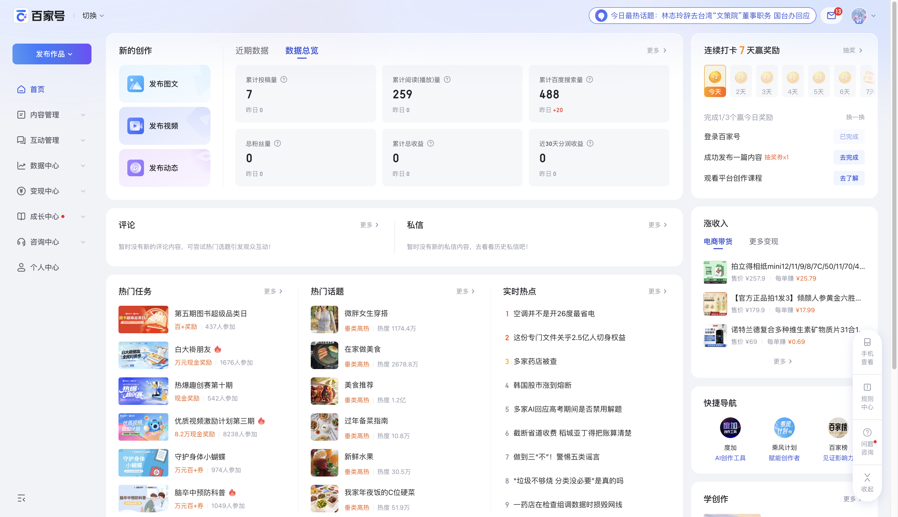
创作者聚合工作台
首页左列承担创作、数据、互动和任务聚合，右列承担打卡、收入、快捷导航等辅助行动。
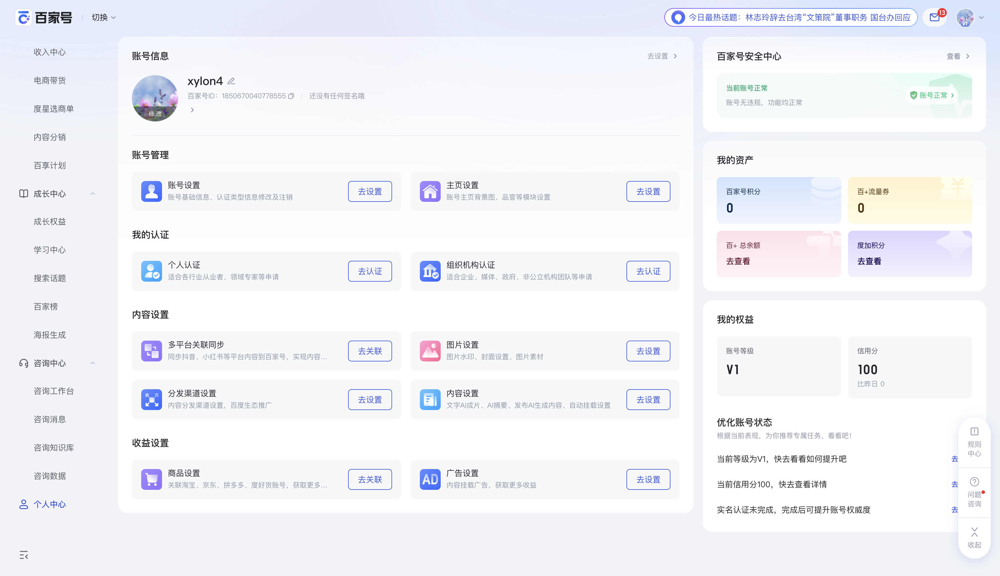
账号配置聚合页
个人中心左列承担账号信息和配置分组，右列承担安全、资产、权益和优化建议。
单工作区框架
局部控制区 + 单一主工作区；数据、列表、设置、成长信息只是工作区内部内容。
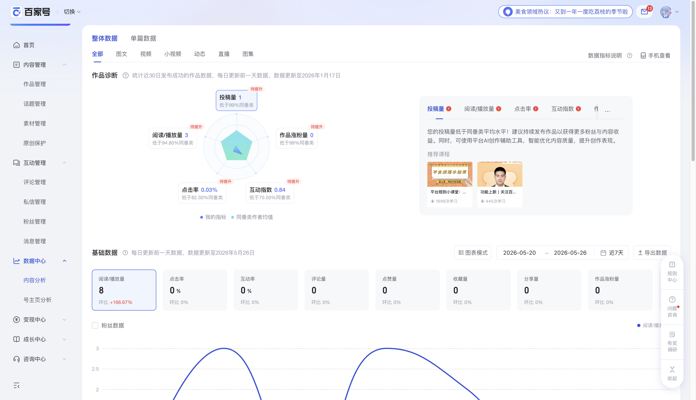
内容数据探索
围绕内容数据进行单一工作区探索。
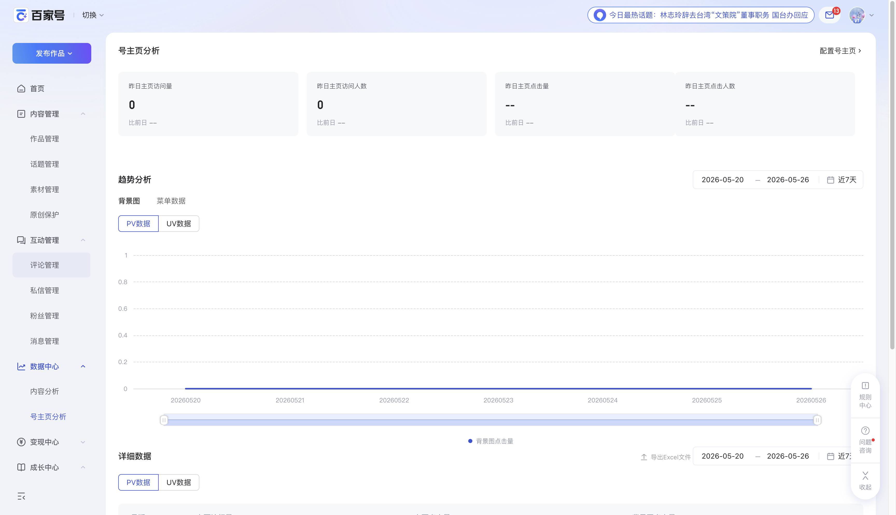
主页数据探索
围绕主页访问数据进行单一工作区分析。
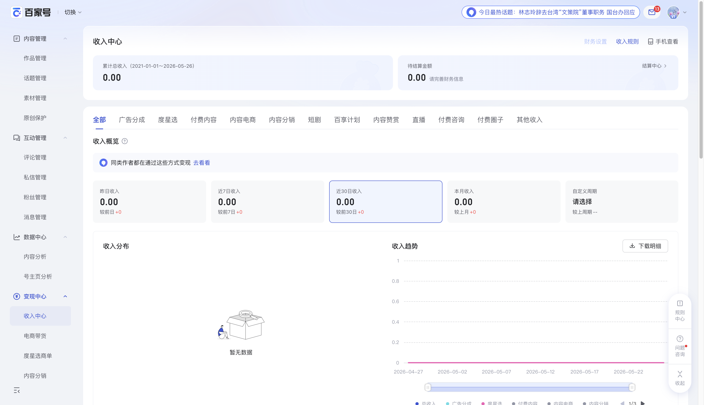
收益数据管理
围绕收益概览、分布和趋势形成数据工作区。
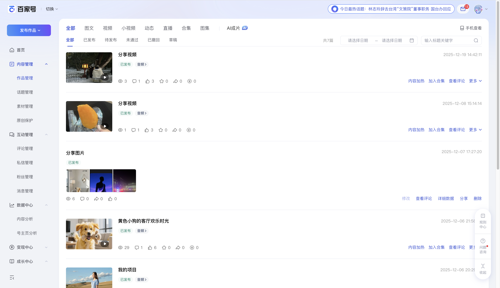
作品对象管理
围绕作品对象集合进行筛选、查看和管理。
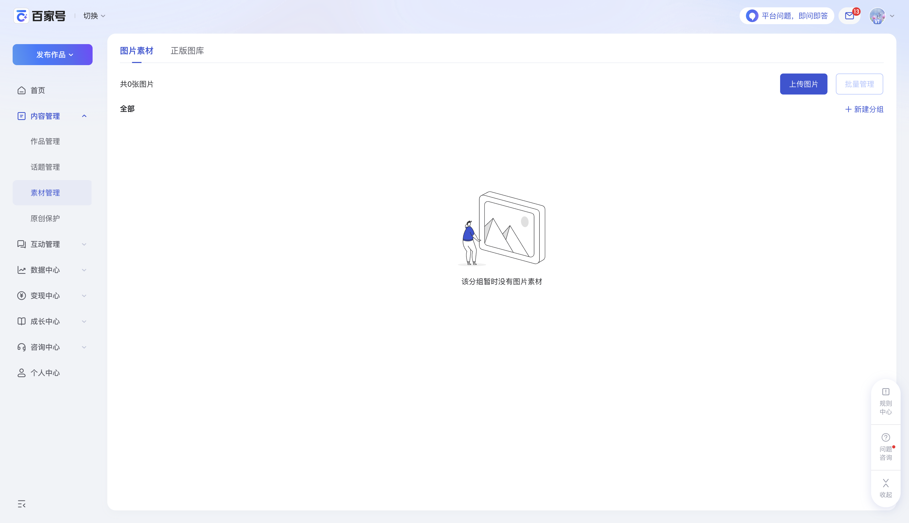
素材对象管理
空状态仍属于对象管理工作区的状态表达。
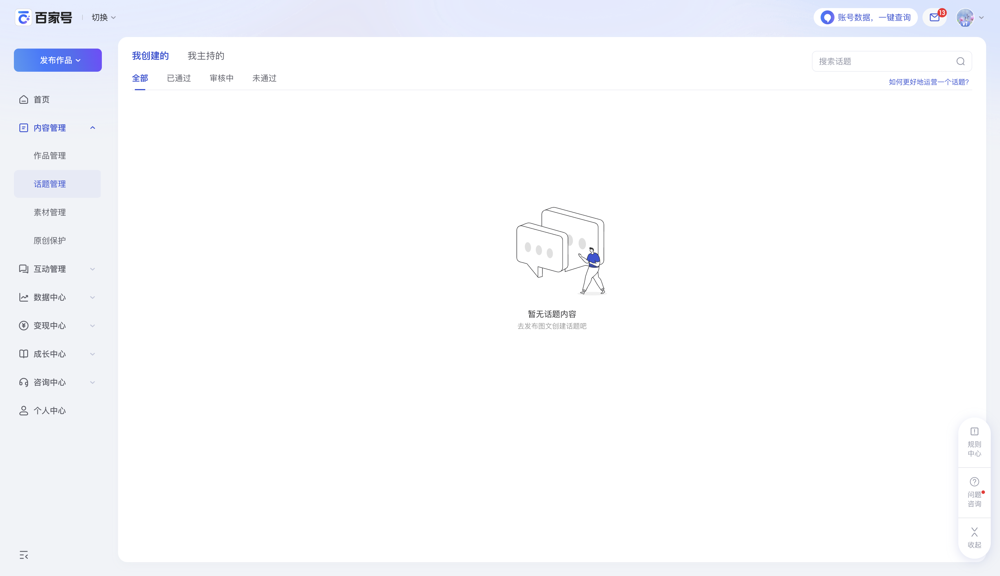
话题对象管理
筛选、搜索和空状态共同服务同一对象工作区。
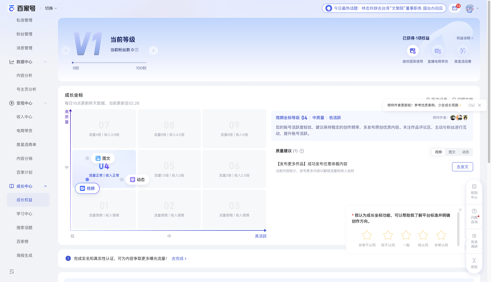
成长路径工作区
等级、权益、成长坐标属于同一成长任务工作区。
主从处理框架
对象集合区 + 对象处理区；左侧选择驱动右侧处理。
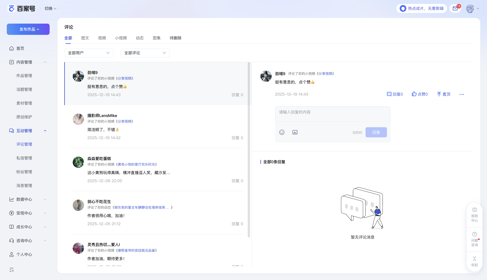
互动对象处理
左侧评论集合定位对象，右侧详情区处理当前对象。
发现浏览框架
资源浏览区 + 上下文辅助栏；资源内容可变化，但浏览与辅助关系稳定。
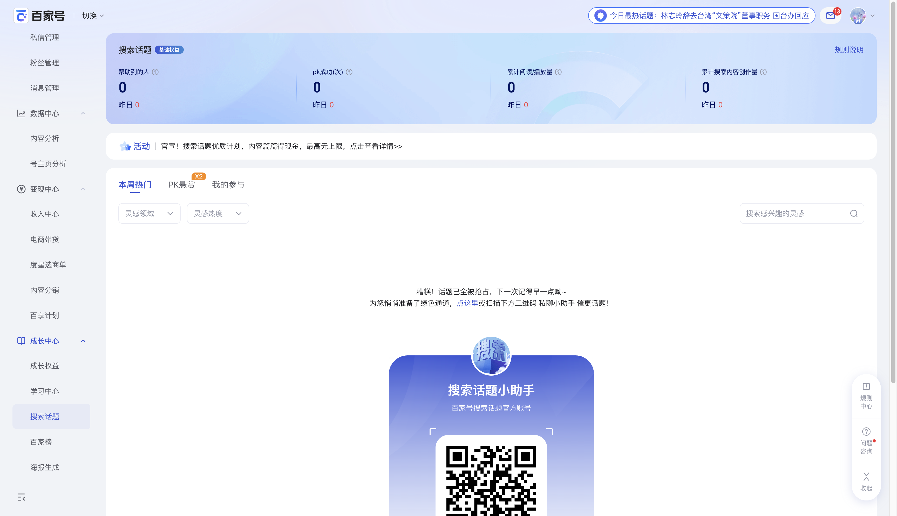
话题资源发现
通过筛选和搜索发现可参与话题。
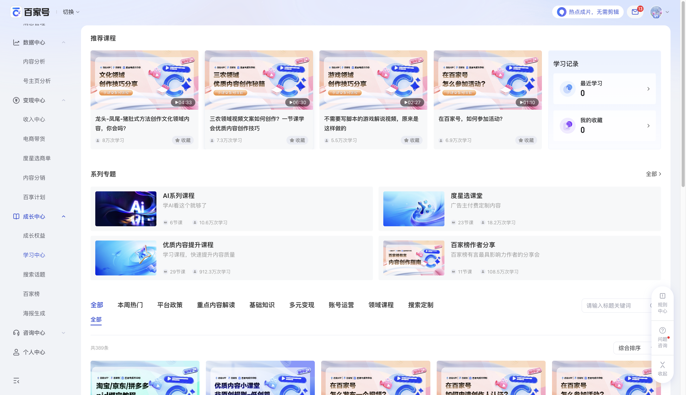
学习资源发现
主区浏览学习资源，右侧承载学习记录等辅助。

商单资源发现
主区发现任务资源，右侧承载管理、学习和榜单辅助。
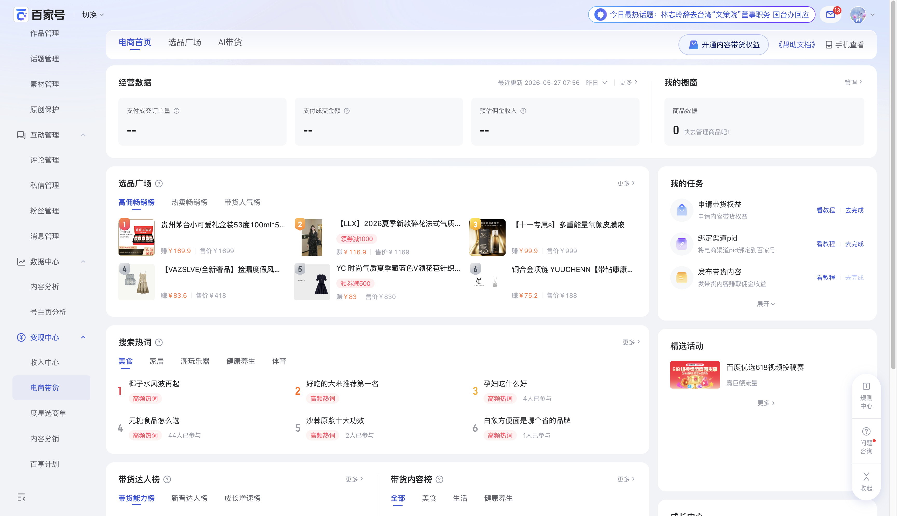
商品资源发现
主区浏览商品和热词资源，右侧承载任务与活动辅助。
叙事转化框架
引导区 + 说明区 + 转化区；页面按阅读和说服路径纵向展开。
分销产品转化
先建立价值主张，再说明亮点和案例，最终导向开通。
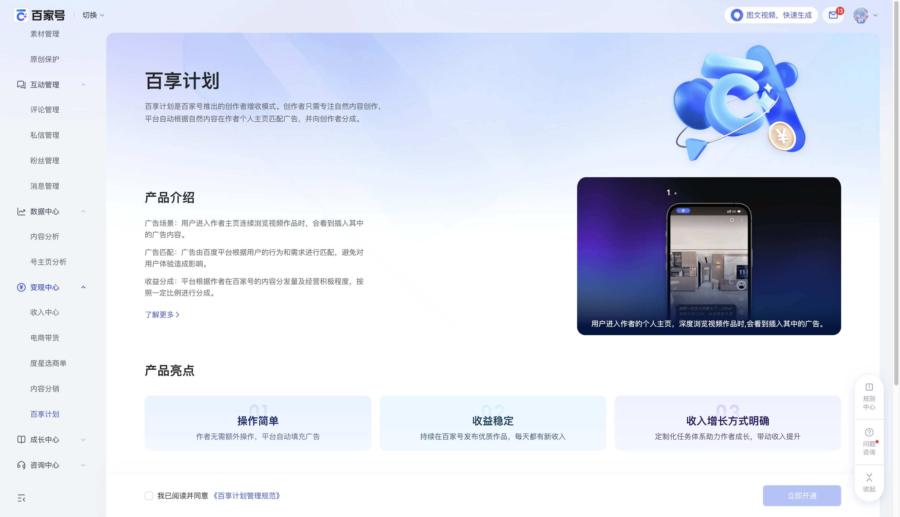
计划产品转化
以产品介绍、机制说明和开通转化构成线性叙事流。
框架边界说明
不进入框架定义
- 指标卡片、图表、表格、列表、按钮、输入框。
- 课程卡、商品榜单、任务卡、收益卡、设置项。
- 空状态插图、具体文案、运营入口和业务数据。
判断顺序
- 先判断区域关系：单区、主从、右侧辅助、叙事流。
- 再判断场景映射：管理、探索、发现、转化。
- 最后在页面实现中选择具体组件和内容。